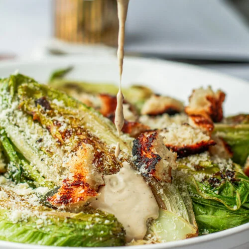
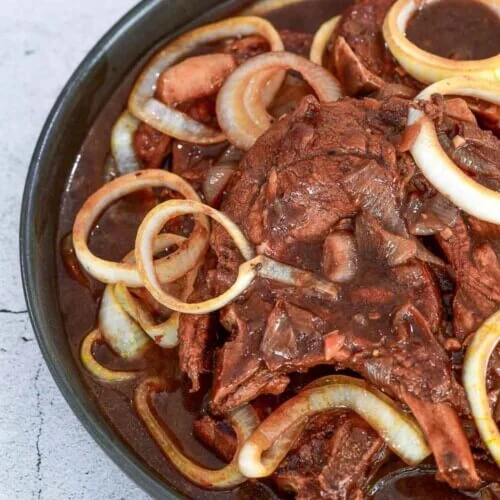

Recipes
Grilled Caesar Salad
Ingredients:
- 3 tablespoons mayonnaise
- 2 tablespoons Worcestershire sauce
- 2 lemons, halved, plus 1 tablespoon fresh lemon juice
- 1 tablespoon Dijon mustard
- 1 teaspoon red wine vinegar
- 2 cloves garlic, minced
- 3/4 cup extra-virgin olive oil, plus more for grilling
- 1/4 cup freshly grated Parmesan
- Kosher salt and freshly ground black pepper
- 2 hearts romaine lettuce, cut in half lengthwise
- Three 3/4-inch slices rustic bread, such as levain or baguette
- 1 tablespoon sugar
Instructions:
- Preheat a grill to medium-high heat.
- In a bowl, add the mayonnaise, Worcestershire, lemon juice, mustard, vinegar and garlic and whisk until combined. Slowly whisk in the olive oil. Add the Parmesan and continue to whisk. Season the dressing with salt and pepper.
- Drizzle olive oil on the romaine hearts and season with salt and pepper. Place the romaine cut-side down on the grill and cook until nicely marked, 2 to 3 minutes. Brush the bread slices with olive oil and place on the grill. Cook until grill marks appear on both sides and the bread is crispy, about 5 minutes.
- Spread the sugar out on a small plate. Dip the cut sides of the lemons into the sugar. Place the lemon halves on the grill and cook until slightly charred and grill marked, 2 to 3 minutes.
- Cut the bread into bite-sized pieces. Place the romaine hearts, croutons and lemons on a wooden board and serve with the Caesar dressing.
Filipino Porkchop Steak
Ingredients:
- 2 lbs. pork chops
- 5 to 6 tablespoons soy sauce
- 1 1/2 cups water
- 1 large red onion peeled and sliced
- juice from 3 limes or 4 large calamansi/li>
- Salt and pepper to taste
- 1 teaspoon granulated white sugar
- 3 tablespoons cooking oil
Instructions:
- Heat the oil in a pan.
- Pan-fry both sides of the pork chop for 3 to 4 minutes or until medium brown.
- Pour-in soy sauce and lime (or calamansi) juice.
- Add water and sugar. Let boil. Cover and simmer for 40 minutes or until the pork becomes tender. Note: add more water if needed.
- Put-in the onions, salt (only if needed), and pepper. Cook for 8 more minute. Note: The dish should have some sauce in it when its done. Adding enough water in the middle of the process will help as long as you make sure that you control the amount.
- Transfer to a serving bowl. Serve with rice.
Filipino Spaghetti

Ingredients:
- 1 lb. spaghetti noodles
- 1 lb. Italian tomato sauce (the kind they used was called “Italian” but tasted sweet and was very smooth in texture)
- 8 ounces tomato paste
- 2 tablespoons minced onion
- 2 tablespoons minced garlic
- 2 tablespoons oil
- 1 lb. ground pork
- 1/2 cup minced carrots and red peppers
- 2 cups diced or thinly sliced hot dogs
- 1 cup water
- 1 tablespoon salt
- 1 teaspoon seasoning mix
- 7 ounces evaporated milk
- grated cheese for topping (they use a processed cheese similar to Velveeta)
Instructions:
- Cook the noodles according to package directions. Set aside.
- Place the garlic, onion, and oil in a large saucepan or skillet. Saute for 3-4 minutes or until soft and fragrant. Add the ground pork and brown the meat until it’s completely cooked.
- Add the minced vegetables and hot dog pieces and stir to combine. Add the water and allow the mixture to simmer for 10-15 minutes. Add the tomato sauce and tomato paste to the meat and continue to simmer the mixture for another 10-15 minutes. Add the evaporated milk and salt and stir until incorporated.
- Combine the noodles and the sauce in a large pot or mixing bowl. Top with grated cheese. At Cherne they grate a processed cheese similar to Velveeta and let it melt into the top layer of the spaghetti.
Creamy Lasagna

Ingredients:
- Eden Melt Sarap 160G. 21/2blocks Grated
- Lasagna Noddles 6pcs
- Large Onion, Chopped 1pc.
- Garlic Cloves, Chopped 4 cloves
- Ground Beef 1/2 1bs
- Spaghetti Sauce 500g
- Tomato Sauce 250g
- Salt & Pepper to taste
- Butter 5 tbsp
- All Purpose Flour 4 tbsp
- Milk 21/2cups
- Egg 1pc
Instructions
- Preheat the oven to 350°F. Brown ground meat in a large skillet on medium heat and stir occasionally. Mix spaghetti sauce into meat mixture.
- Spread 1 cup of meat sauce onto the bottom of a small to medium-sized baking dish and top with lasagna noodles until the layer is full.
- Spread half of the cheese mixture over the noodles.
- Repeat meat sauce, noodles, and cheese layers once. Top with remaining noodles and meat sauce. Make sure to cover noodles with sauce. Sprinkle the remaining 1/2 cup of Eden Melt Sarap on top. Cover with foil.
- Bake for 45 minutes. Remove foil. Bake for 15 minutes or until noodles are tender and cheese is golden brown. Let stand for another 15 minutes before cutting.
Adobong Manok

Ingredients:
- 2 tbsp canola oil
- 6 cloves garlic crushed
- 1 pc onion, sliced
- 1 kilogram chicken cut ups
- 2 tbsp vinegar
- 1/4 cup soy sauce
- 1 cup water
- 2 pcs bay leaves
- 1 tsp whole black peppercorns, slightly crushed
- 2 pc Knorr chicken cubes
- 1 tsp brown sugar packed
- Option: 1 cup kale or spinach
Instructions:
- Heat oil in pan and sauté garlic and onions. Then add chicken to the pan and sear on all sides, until you have a little browning in the chicken skin.
- Pour in vinegar, soy sauce and water. Add bay leaves, pepper and Knorr Chicken Cubes. Bring to a boil over high heat then reduce heat to simmer, but do not cover the pan. Continue to simmer for 10 mins.
- Remove chicken pieces from sauce and fry in another pan until nicely browned.
- Put back fried chicken pieces into sauce. Add sugar and let simmer again for another 10 minutes or until sauce has thickened. Serve warm.
Adobong Baboy

Ingredients:
- Pork belly
- Garlic
- Dried bay leaves
- Vinegar
- Soy sauce
- Peppercorn
- Water
- Salt
- Combine the pork belly, soy sauce, and garlic then marinade for at least 1 hour
- Heat the pot and put-in the marinated pork belly. Cook this all up for a few minutes
- Pour the remaining marinade including the garlic
- Add water, whole peppercorn, and dried bay leaves. Then bring your mixture to a boil. Simmer for 40 minutes to 1 hour
- Put the vinegar inside and simmer for 12 to 15 minutes
- Add salt to taste
Instructions:
Puto Bumbong

Ingredients:
- 1 1/3 cups sticky purple rice
- 1 1/3 cups glutinous white rice malagkit
- 2/3 cup long grain purple rice
- 6 cups water for soaking the rice
- 3/4 cups muscovado sugar
- 1 1/2 cups freshly grated coconut
- 1/2 cup softened butter
- Combine all types of rice in a large mixing bowl. Pour water.
- Soak for 2 days.
- Drain the water by pouring the contents of the bowl into a large sieve.
- Put the soaked rice in a large food processor. Start to grind the rice until it becomes very fine.
- Fill your puto bumbong steamer with water halfway through.
- Apply heat and then let the water boil.
- Meanwhile, fill each bumbong (bamboo tube) with powdered rice. Note: Do not compress the rice so that steam can pass easily.
- Once the water starts to boil rapidly, arrange each bamboo tube on the steamer.
- Continue to cook until steam comes out of the tube.
- Remove the tube from the steamer.
- Arrange the contents over a piece of banana leaf.
- Spread butter all over and then top with freshly grated coconut and muscovado sugar.
Instructions:
Puto Cheese

Ingredients
- 1 cup flour
- ½ cup sugar
- 2 teaspoons baking powder
- 1 large egg
- ½ cup milk (evaporated or fresh)
- ¼ cup water
- 1 tablespoon butter -melted
- 1 teaspoon vanilla extract
- ¼ cup grated cheese strips cheese - for topping
- Butter or oil for brushing the molds
- In a mixing bowl, combine flour, sugar and baking powder.
- Add the milk and egg and mix using a whisk or electric mixer at medium speed only until batter becomes smooth.
- Add the water, butter and vanilla extract and mix well for a minute or two.
- Lastly, add the grated cheese and fold in slowly using a spatula or spoon.
- Grease each mold with butter and fill the molds with batter up to ¾ full.
- Fill the bottom of the steamer with water and bring to a gentle simmer over very low heat.
- Place the molds in the steamer basket and steam for about 10 to 12 minutes or until toothpick inserted comes out clean.
- Remove the lid and add a strip of cheese on top of each put.
- Steam for another minute or two until cheese melts.
- Turn off heat and let it rest until slightly cooled down.
- Remove the cooked Puto Cheese from the molds and transfer to a serving plate.
Instructions:
Sinigang na Baboy

Ingredients:
- 4¼ cups water
- 2 cups pork spare rib cut into chunks
- 1 pc red onion, quartered
- 2 pcs medium sized tomato, quartered
- 8 pcs sitaw, sliced into 2” pieces
- 250 g kangkong stalk and leaves
- 1 pc talong, sliced
- 2 pcs siling pangsigang
- 1 (20g) pack Knorr Sinigang sa Sampalok Mix Original
- Optional: labanos, okra
- Begin by washing pork spare ribs in cold running water to remove any visible impurities. Then, place pork ribs submerge in a medium pot with a liter of water. Bring to a boil without covering the pot and allow the scum to float to the surface. Meticulously remove the scums from the surface of the water using a slotted spoon or a spatula. Scums are impurities found in meat.
- After the broth clears up, turn you heat to medium setting, then it’s time toss in your onions and tomatoes to add flavor to the broth. Cover your pot and let it simmer to fully cook your meat. Use a fork to pierce the meat so that the flavors would also enter the meaty parts of the spare ribs, You also do this so you can tell if it’s already set and tender.
- You can already add your vegetables. Start by adding the sitaw, kangkong stalks and talong into the pot and cook until these turn dark green. If you decide to use labanos and okra, you can also add those at this point. This should take roughly around 2-3 minutes.
- Cover the frying pan, but make sure to open it a little so that steam can come out.
- Add in your siling sigang, kangkong leaves and the Knorr Sinigang sa Sampaloc Mix. Stir and let it simmer. It should be done in about 2-3 minutes.
- NAll done! Transfer your Sinigang to a serving bowl. This is a happy treat that warms, soothes and satisfies everyone in the family! Remember to prepare extra servings of rice to enjoy the extra asim kilig taste of this Filipino classic soup. Enjoy!
Instructions:
Pork Paksiw

Ingredients:
- ½ kg lean pork, cut into serving pcs.
- 2 cups liver sauce
- ¼ cup vinegar
- ½ cup brown sugar
- 3- 4 tbsp Knorr Liquid Seasoning
- 360 ml water
- 1 pc. Knorr Pork Cube
- 1 tsp whole black peppercorns
- 3 pcs. bay leaves
- Boil 6 cups water in a pot.
- Add the pork hock. Continue to boil for 15 minutes.
- Discard water and wash the pork with running water until all impurities are cleaned.
- Pour the water in a pot and bring to a boil.
- Add the whole pepper corn and dried bay leaves.
- Pour soy sauce into the pot and add the garlic.
- Put-in the sliced pork hock and simmer for 1 to 1.5 hours (or cook in pressure cooker for 30 minutes).
- Add the vinegar and simmer for 10 minutes.
- Place the banana blossoms in and simmer for 5 to 7 minutes.
- Add the brown sugar and salt and simmer for 2 minutes.
Instructions:
About
This cookbook is filled with simple, modern recipes that we hope you'll enjoy making as much as we enjoyed putting them together. If you're curious to learn a bit more about us, just hit the "Go to Top" button at the bottom right of the page, and then click "ABOUT US" for a quick peek about us. We genuinely hope that these recipes can help you cook your favorite dish as well as honing your cooking skills.Happy Cooking!!!